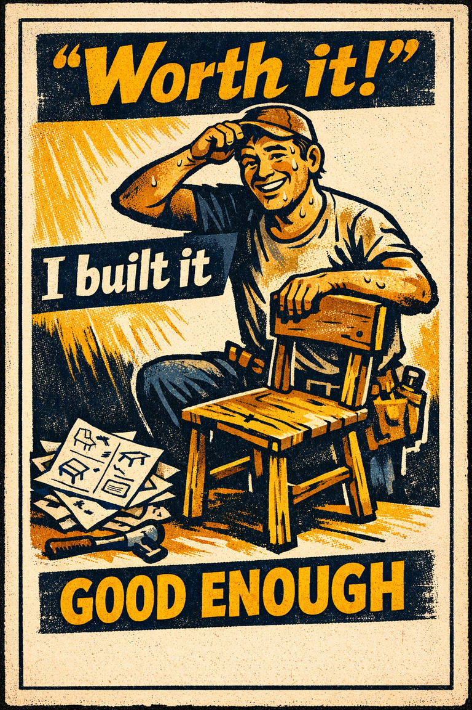
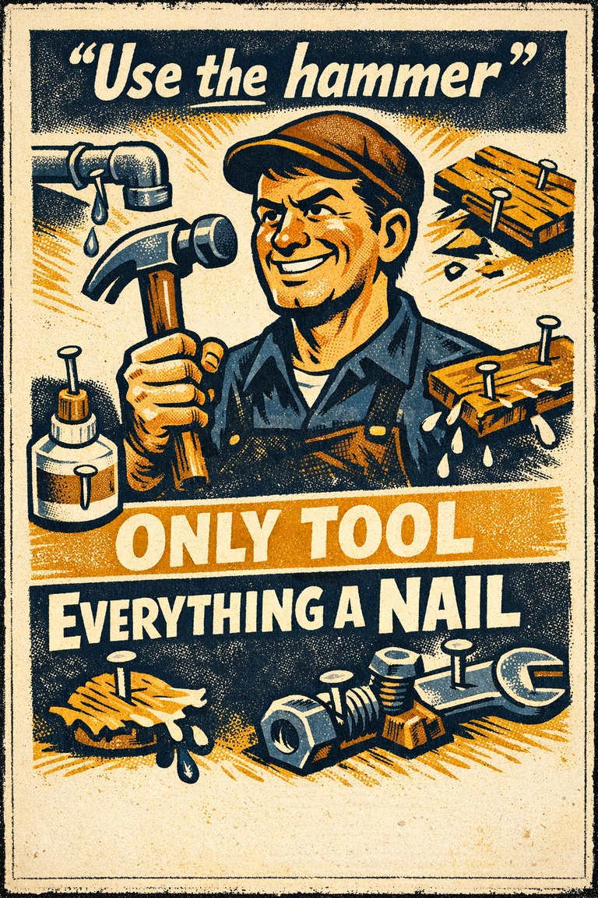
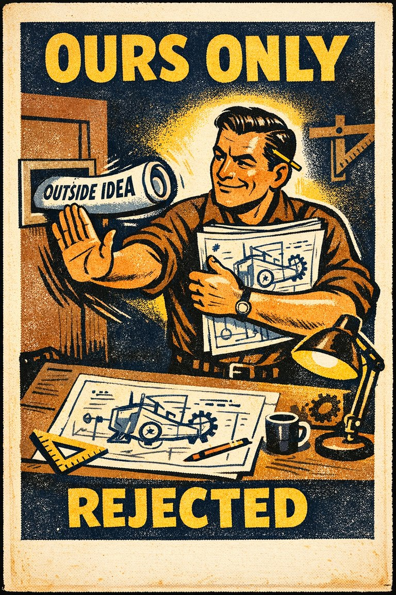

Everyday life
In everyday life, this often looks like people leaning on the easiest first interpretation when situations where decision is already difficult and the self-perspective cue feels easier to trust than a fuller review..

Cognitive Biases
A practical cognitive-bias site with clear definitions, learning paths, assessments, self-audits, and debiasing tools.
Cognitive Bias
Devaluing proposals only because they purportedly originated with an adversary
What it distorts
Biases that shape choices, commitments, avoidance, preference drift, and action under uncertainty.
Typical trigger
Situations where decision is already difficult and the self-perspective cue feels easier to trust than a fuller review.
First countermove
Start with the decision question instead of the first intuitive answer, then check whether the self-perspective pattern is doing invisible work.
Best use
Quick reference
What default, fear, sunk cost, or convenience cue is steering the choice more than the forward-looking case?
In decision problems, the bias intensifies when ego, identity, ownership, or asymmetry between self and others enters the picture before a fuller check catches up.
Use the quick check and reflection questions before locking the label. Nearby entries often share the same outer appearance while differing in what actually drives the distortion.
Each example changes the surface context while keeping the same hidden distortion in place.
In everyday life, this often looks like people leaning on the easiest first interpretation when situations where decision is already difficult and the self-perspective cue feels easier to trust than a fuller review..
At work, this often appears when teams treat the first coherent story as sufficient instead of slowing the process long enough to compare alternatives.
In public discourse, it often surfaces when commentators move too quickly from salience to conclusion while the underlying evidence remains thinner than it sounds.
The distortion usually feels like ordinary good judgment from the inside, which is why procedural repairs matter more than mere recognition.
Teaching note: Start with the decision problem, then show how the self-Perspective pattern makes the distortion feel natural from the inside.
The strongest debiasing moves change the process, not just the label.
Start with the decision question instead of the first intuitive answer, then check whether the self-perspective pattern is doing invisible work.
Ask someone else to restate the case from a genuinely different starting point before committing.
Change the workflow so this distortion becomes harder to repeat by default next time.
Practice And Repair
Follow the moment where the bias first becomes attractive, then track how that attraction turns into a distorted judgment before jumping straight to the label.
Situations where decision is already difficult and the self-perspective cue feels easier to trust than a fuller review.
The first coherent reading starts to feel like ordinary good judgment from the inside.
Biases that shape choices, commitments, avoidance, preference drift, and action under uncertainty.
Start with the decision question instead of the first intuitive answer, then check whether the self-perspective pattern is doing invisible work.
What default, fear, sunk cost, or convenience cue is steering the choice more than the forward-looking case?
Spot It
Slow It
Reframe It
These are nearby labels that can share the same outer appearance while differing in what actually drives the distortion. Use the overlap, the distinction, and the diagnostic question together before settling the call.
Why compare it: A nearby label worth comparing before settling the diagnosis.
Why compare it: A nearby label worth comparing before settling the diagnosis.
Why compare it: A nearby label worth comparing before settling the diagnosis.
These are useful when the label seems roughly right but the process change still feels underspecified.
What default, fear, sunk cost, or convenience cue is steering the choice more than the forward-looking case?
What changes in this judgment when the person involved is me, my group, or someone I already identify with?
What evidence or comparison would most seriously change the current call?
These neighbors were selected from shared categories, shared patterns, and explicit editorial links where available.

The tendency to attribute greater value to an outcome if they had to put effort into achieving it.

An over-reliance on a familiar tool or methods, ignoring or under-valuing alternative approaches.

An aversion to contact with or use of products, research, standards, or knowledge developed outside a group.
The tendency when making decisions, to favour potential candidates who do not compete with one's own particular strengths.

The tendency for someone to act when faced with a problem even when inaction would be more effective, or to act when no evident problem exists.

The tendency to solve problems through addition, even when subtraction is a better approach.